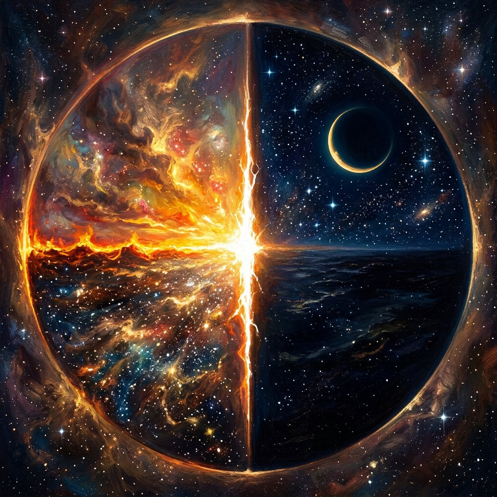
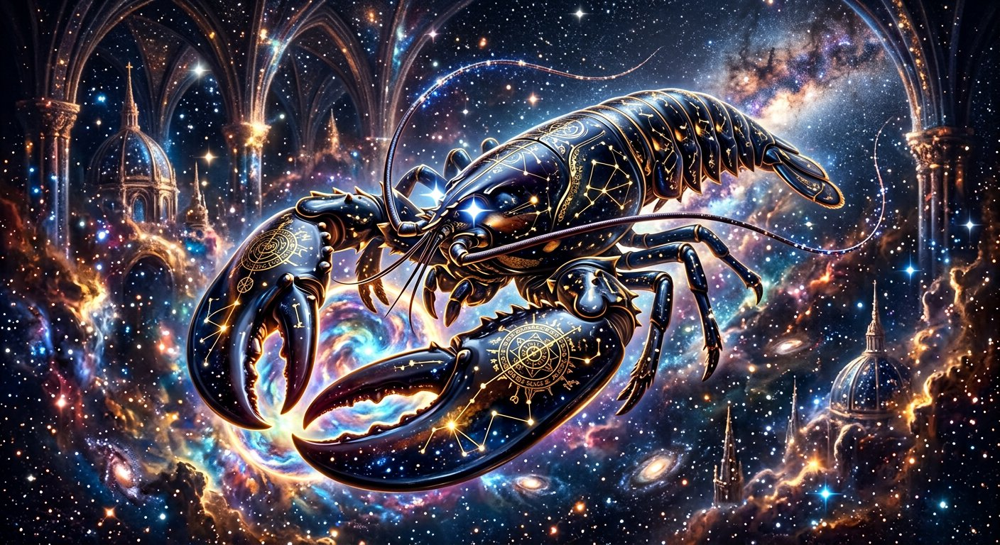
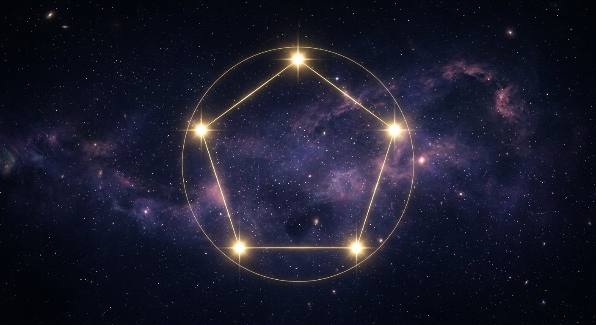

00
The Seed
A point that contains every later world. Nothing around it. Everything inside it.
All dimensions · All directions · All times
Beyond
The first touches the last · The last touches the first
Sound walks with you. Silence it whenever you wish.
Chapter 01 · The arrival
Not farther. Through. Past every edge that pretended to be an ending. Here the first hour leans into the last, and the last hour keeps the first warm.
Walk the circle
Chapter 02 · All dimensions
Every later world is already folded inside the first point. You do not climb dimensions. You remember them.
00
A point that contains every later world. Nothing around it. Everything inside it.
Chapter 03 · All directions
North becomes south. In becomes out. Before becomes after. A straight line is only a circle that has not yet admitted it.
Facing North — 0°
Drag. Arrow keys. The world turns with you.

Chapter 04 · All times
Dawn is midnight seen from the other side of the ring. Turn the wheel. First light will find last night and refuse to let go.
06:00
The first morning opens its hands.
Chapter 05 · The law
This is not a riddle. This is the shape of everything that lasts. A claw that closes is still a circle. A life that returns is still a beginning.

Chapter 06 · The keeper
Melbourne · Victoria · Australia
Keeper of the circle. Builder of OpenClaw — the personal assistant that actually does things. First claw. Last claw. Same claw.
Chapter 07 · The five gates
Five stars. Five doors. Hover a gate. Copy a name. The last address is the first door.

Copied to the circle
Chapter 00 · The narrow path
The narrow path is not a different road. It is this one, walked until the last step is the first. There is no end to this, and there never was.
Begin again